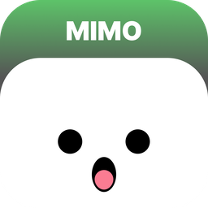

Mimo
A desktop companion for Windows, living in a small floating pill at the top of the screen — inspired by the iOS Dynamic Island.
Press a shortcut or just say “Hey Mimo”, then ask: open an app or a website, put a video on YouTube or a song on Spotify, check the weather, look over your PC's health, read your notifications, set a reminder, keep a to-do list, take a screenshot or translate a sentence — in English or French. Or just say hi: Mimo answers back. It also learns how you use your PC and makes suggestions on its own, without ever getting in the way. It is built with a focus on performance, security and long-term maintainability — it should never be the kind of background companion that slows a machine down.
Voice & shortcut
Summon Mimo with any key you like or “Hey Mimo”. Speech recognition runs fully offline — and Mimo answers small talk too.
Apps & websites
Opens your installed apps, common websites and Windows tools by name.
Search on platforms
“Squeezie on YouTube”, “Gotaga on Twitch”, a song on Spotify, the latest video of a channel — straight to the right page.
System controls
Volume, mute, screen brightness, pause or next song, lock the PC or put it to sleep — just ask.
Quick answers
Time, date and the weather, for your area or any city.
PC check-up
CPU, memory, disk, temperature, battery and GPU at a glance, with plain-language advice.
Notifications
Lists your recent Windows notifications, and reads them aloud on request.
Reminders & tasks
Reminders, alarms and a simple to-do list, set by voice or typed, and editable in place.
Suggestions
Learns your routines and offers to open your usual apps, close one that slows the PC down, empty a full recycle bin, plug in a low battery or take a break.
Look back
“What was I doing yesterday around 3 pm?” — and “reopen what I had open” brings those apps back.
Screenshots & recordings
“Take a screenshot”, “record the screen”: saved to Pictures and Videos, without Mimo in the shot.
Your own commands
Teach Mimo your phrases: a reply, a website, an app or another request — typed or spoken.
Translation
Translates a sentence, or whatever you copy next, between English and French.
Local AI
Optional and free: a small AI that runs on your PC to understand any wording, answer questions and summarize or fix what you copy. Nothing goes online.
A little face
Mimo has a tiny character that listens, thinks, smiles, frowns and dozes off — and follows your pointer with its eyes.
Your colors
Pick Mimo's color — for the pill, the buttons and every window — and tint its glass if you like.
Platform & stack
Windows only, for now. Tauri 2 (Rust) for the native shell, Svelte and TypeScript for the interface.
Privacy. No telemetry, and your settings, reminders, tasks, commands and activity history stay on your PC. Mimo only goes online to open the links you ask for, to fetch the weather (Open-Meteo, plus ipwho.is to estimate your location when no city is given), to translate text (sent to Google Translate) and, if you turn on the local AI, to download it once.